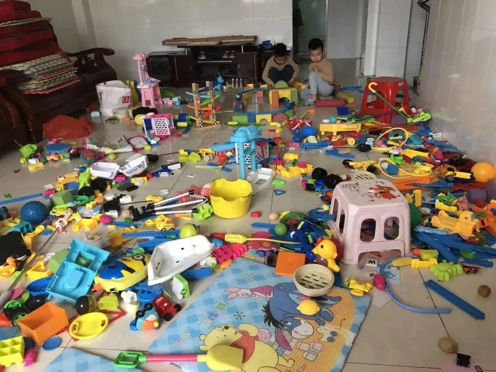
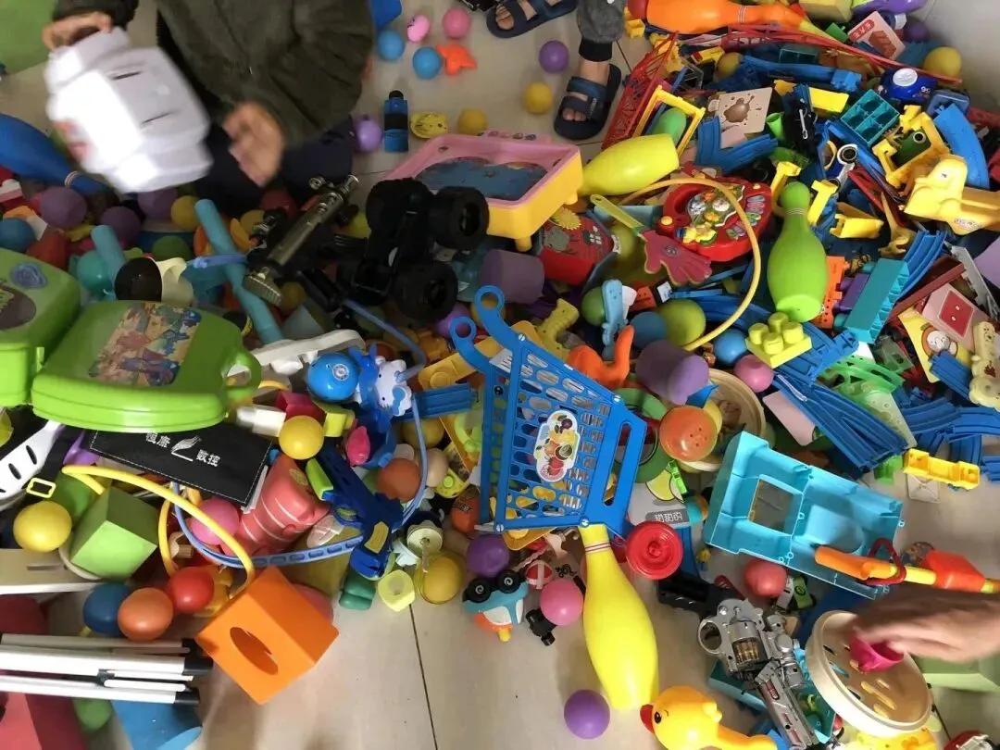
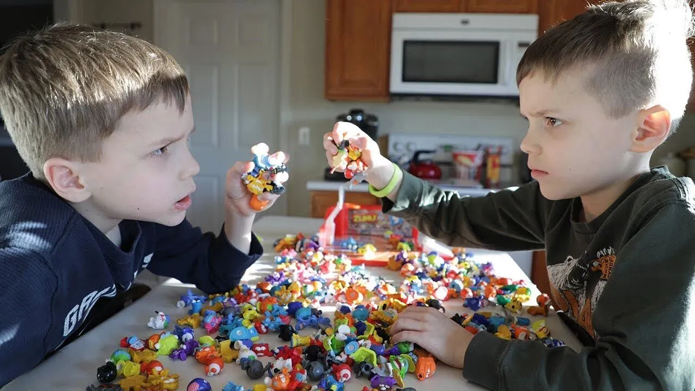
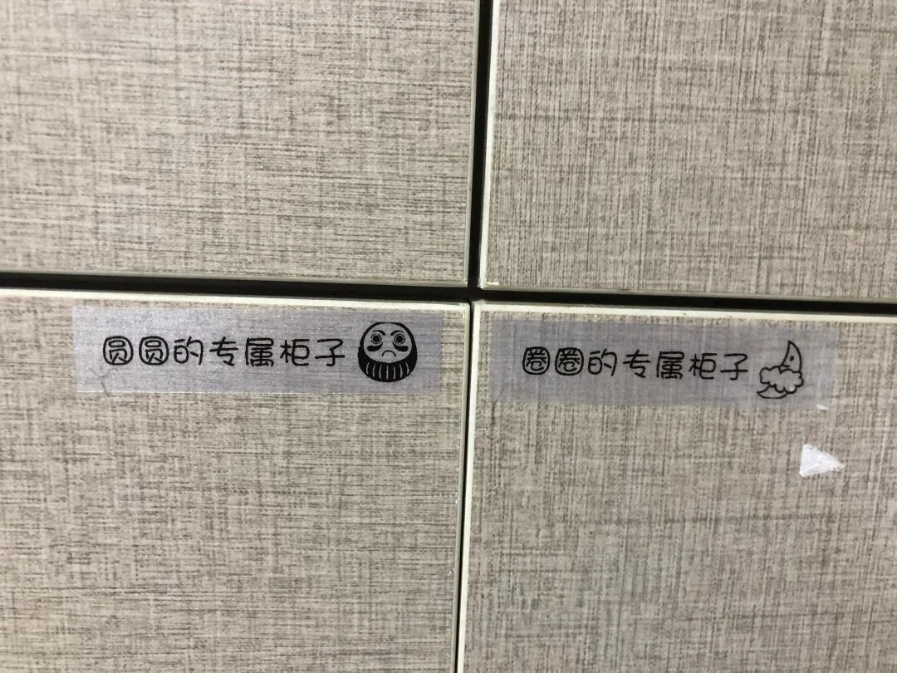
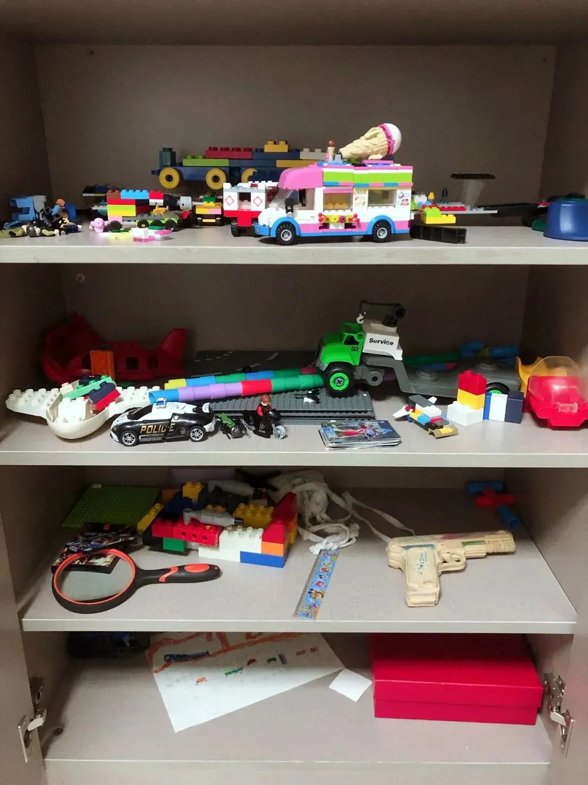

孖仔帮
公众号ID：twinsbang
关注
文|圆圈妈
网图|侵删
先插播一则群通知：第11期双胞胎跳蚤市场群已开放，公众号输入“赶集11”，扫码即可入群。
广东部分地区的疫情复燃，许多全职孖仔妈妈不得不重启宅家带娃，相爱相杀的模式。
每天看着两小只混世小魔王满屋子乱窜，搞破坏，真是分分钟都想原地爆炸！有木有！？
特别是当你刚收拾完一堆玩具，累得直不起腰的时候，两个娃还泪眼汪汪地追着你，缠着你，问你要新玩具，心里那个拔凉啊，扑棱棱地碎了：明明已经有那么多玩具了，为什么还要吵着买新的？
可是下一秒，你竟然鬼使神差地打开了某宝某东某多，输入关键词“儿童玩具"，默默地添加进购物车。
果然，每一个当妈的都是天天喝孟婆汤续命的，好了伤疤忘了疼就是副作用，说好打死再也不买玩具，结果俩娃一哭二闹三暴跳，就怂了。
能咋办？为了图安静，求太平，还是买吧，用钱能解决的问题都是小意思。
但是，且慢！
因为，你有可能钱花出去，最终买的只是个寂寞。
别问我怎么知道的。
6年了，败了那么多玩具，我也算成精了！双胞胎的玩具，怎么买？买什么？买多少？是个大学问，也是个巨坑。
#败家专业户
今天这篇来避坑！
1
玩具要定期收纳整理分类
这道理都懂，只是经历过收玩具的梗的人都知道，玩具收拾好后过段时间还是乱糟糟的，还不如就这么乱下去。
不，听我的，你其实还有更好的选择。
先把玩具按可玩性分类收拾。
把那些不完整的，缺胳膊断腿的玩具果断丢弃；把可玩性不高的玩具，收集起来，送人或者压箱底当收藏品，总之少现身。
啥叫可玩性不高的玩具？
就是...你看见的玩具是什么样就是什么样，单一的，现成的，组装好的，不能自己动手的，禁不起推敲，一眼就看穿，一会就玩腻，再玩也没啥意思。
真的，不要对这些玩具有太多的留恋，很多时候，它们还不如家里那些可以敲敲打打的锅碗瓢盆。
虽然隔段时间拿出来玩又可以过把瘾，换来短暂的热情，但这些玩具不能激发孩子们的想象力，也不能提供创造性的游戏方式，最终是弊大于利，反而会让孩子们感觉玩具太多，越不知道玩什么，越感到无聊，越指望着父母买更多玩具。
那啥是可玩性高的玩具？
简单地说就是耐用的，耐摔的，比如刚学走路的双胞胎，特别喜欢拆东西，所以给他们一个拆开又不会坏还很好玩的玩具是明智的选择。
此外，这玩具还得是灵活多变的，可以组装成各种形状，而不是一成不变的。最经典的就是积木，利用率高，互动性强，还可以搭建出不同造型，极具趣味性，也最适合双胞胎或家有兄弟姐妹的一起玩。
2
每次只拿出1种玩具
有道是，少即是多，用在小孩子的玩具上更是如此。
小孩子的专注力有限，若选择太多，更容易分散注意力，他们总是玩一下就觉得下一个会更有意思，等换了下一个又觉得再下一个有意思。
比如这个小火车玩一下，下一秒去翻下绘本，觉得没劲了，就去搓橡皮泥，玩腻了又跑去玩乐高。
我们家地方小，场地有限，我通常都是限制圆圈哥俩每次只玩一种玩具，虽然他们经常会意见不统一，这个想玩拼图，那个想玩积木，但他们为了想玩玩具，很快就会达成一致。
如果家里够大，同时两孩子都想玩各自喜欢的玩具（常见于龙凤胎孩子），可以提供不一样的玩具，让他们到各自的区域玩。
但要做好心理准备，因为...不出10分钟，他们肯定会不自觉地玩在一起，然后两人可能还会厮打起来，最后结局就是：玩具混了，得收拾；两人都挂彩了，欠收拾。
如果你，特别是老人家，怕玩具买回来发挥不了用处，担心孩子们少玩一个玩具就不快乐，那你还可以这样做。
找个小隔间专门放玩具，美其名曰【玩具屋】，记得带把锁，因为....防火防盗防捣蛋鬼双胞胎，这道理得时刻谨记着。
把分类收纳好的玩具统一放在玩具屋，并给双胞胎定个规则：当一个玩具不想玩了，就先收回来，再换下一个。
跟孩子们再强调下：想从玩具屋拿出一件新玩具，就得放回去一件。
从小开始训练，效果越好，对于2岁以上的双胞胎尤其适用！
这是个很实用的方法，虽然很俗又老套，但真的很管用，至于为何有时有效，有时失灵，很关键在于大人是否把好关。
千万别一时心软，受不了两个娃的软磨硬泡，就擅自破坏了这个规则。
说句不中听的，在收拾玩具这件事情上，有时候，真的不是孩子们赖皮，不爱收拾，而是大人们自己作的！
3
给收玩具来点仪式感
一定要重视收拾玩具，除了能让家里整齐，还能给玩具保鲜！
给每个孩子准备一个专门放玩具的地方，可以是一个小柜子或者小箱子均可。注意：是一人一个，单独的，非共用的专属玩具柜。
这是一个鼓励孩子们收拾玩具，避免玩具成堆乱放的有效方法。
我们的住处只有35平米，每个角落都利用到极致，但我们却很奢侈地给圆圈兄弟准备了两个超大收纳玩具柜，还命名为“圆圆的玩具之家”和“圈圈的玩具之家”。
多亏这两个玩具柜，我们的小家比之前的大房子整洁了不少，温馨了许多。
#圆圈的玩具之家
之前住120平米的房子，没有划定玩具收纳区域，玩具没有归属，到处被乱扔，让他们收拾，他们就互相推诿，最后整个房子都是玩具，乱糟糟的一片，无处下脚。
现在好啦，玩具有各自的家了，都得为自己的玩具负责。
当我说，时间到，请让玩具回家吧！
他们虽然还玩得意犹未尽，有时也会赖皮，有时也会拖拉，但最后还是记得把心爱的玩具送到家。
4
好啦，以上3点都晓得后，接下来就可以买新玩具了，有什么建议呢？
这是清单，直接抄作业吧！
一箱积木（磁力片，雪花片，蘑菇粒）
一个球
一盒拼图
一盒画笔
一沓白纸
一盒橡皮泥
一套过家家
两块画板
两把小铲子
以上，3岁前，足矣！
如果觉得还不够，那请记住：无论价格多么昂贵，色彩多么缤纷，外表多么炫酷的玩具，如果没有让孩子们发挥创造力，开动脑筋的余地，那么这个玩具就是价值不高。
最后，说个真相，以上3个避坑小妙招可以助你解燃眉之急，但不能帮你一劳永逸。
我发现，很多父母包括我自己，都对玩具有一个很深的误解，认为玩具嘛，就是给小孩子玩的东西而已。
实际上，孩子们真正感兴趣的是与自己生活有关，能满足内心深处的创作热情，能让自己找到成就感的玩具。
简而言之，玩的就是心情，至于玩具是什么真的不重要。
若我们做父母的无法参透这一点，那么买再多玩具都只是个...寂寞而已。
-END-
今日互动话题
#你被双胞胎的玩具割韭菜了吗？#
评论区聊一聊呗！
微信公众号：孖仔帮
ID : twinsbang
专注双胞胎孕育，养育，教育经验分享
扫码关注我们
点一下你会更好看耶






